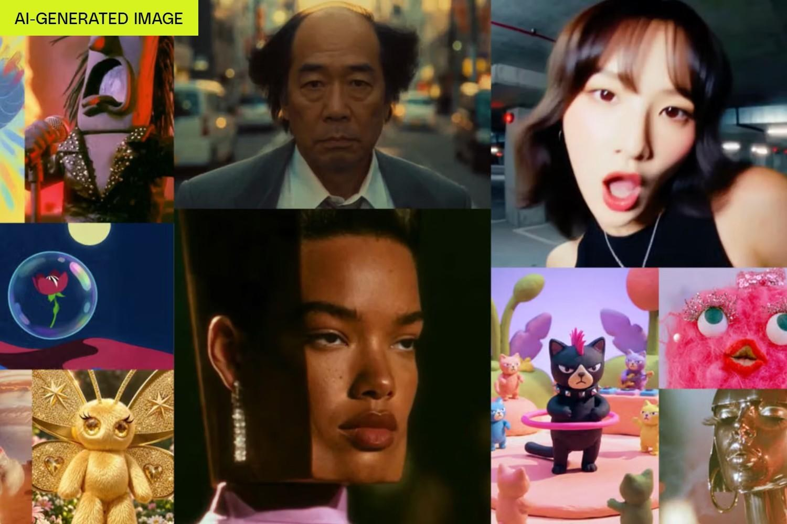

Из любой песни в библиотеке Suno теперь можно сделать ролик длиной до 15 секунд: клип, лирик-видео, анимацию собственной фотографии или обложку альбома. Модель специально обучали «идти» за музыкой — видео следует структуру трека, подхватывает слова и синхронизирует движение губ (липсинк) с вокалом. Клип можно продлевать, редактировать и докручивать текстовым промптом; для старта доступны готовые персонажи-заготовки.
В Suno открыто объясняют тайминг: раньше генерация видео была медленной и слишком дорогой — по их словам, доступной только предприятиям, а не обычным людям. Новое поколение моделей, считают в компании, удешевило её настолько, что видео стало частью «креативного развлечения» для всех. Это уже второе расширение за месяц: в октябре сервис запустил Speech — стихи, медитации и другой говорящий голос.
Визуальные кредиты покупаются отдельно от кредитов на генерацию песен — у Visuals собственная тарифная страница. То есть видео в Suno не «бесплатная надстройка», а новый коммерческий продукт.
Компания делает упор на защиту артистов: новые текстовые и визуальные фильтры блокируют промпты с изображением реальных артистов, публичных персон и охраняемых объектов; сгенерированный кадр проверяется до того, как его увидит пользователь. Продолжается работа с Audible Magic, ACRCloud и Musixmatch против чужого аудио, а перед выходом за пределы платформы каждый ролик получает вшитый водяной знак. В Suno честно предупреждают: промпты, которые работают на других видео-платформах, здесь могут не пройти — «и это по дизайну». За злоупотребления — от удаления контента до блокировки аккаунта.
Запуск выходит на фоне громких авторских исков к Suno — только в начале ноября правообладатели подали на сервис в суд. Поэтому связка «водяные знаки + фильтры + маркировка» выглядит не маркетингом, а попыткой заранее закрыть главный юридический фронт.